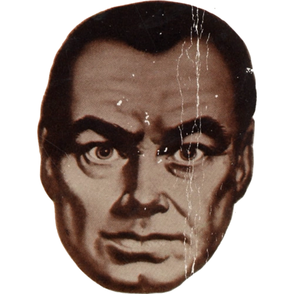
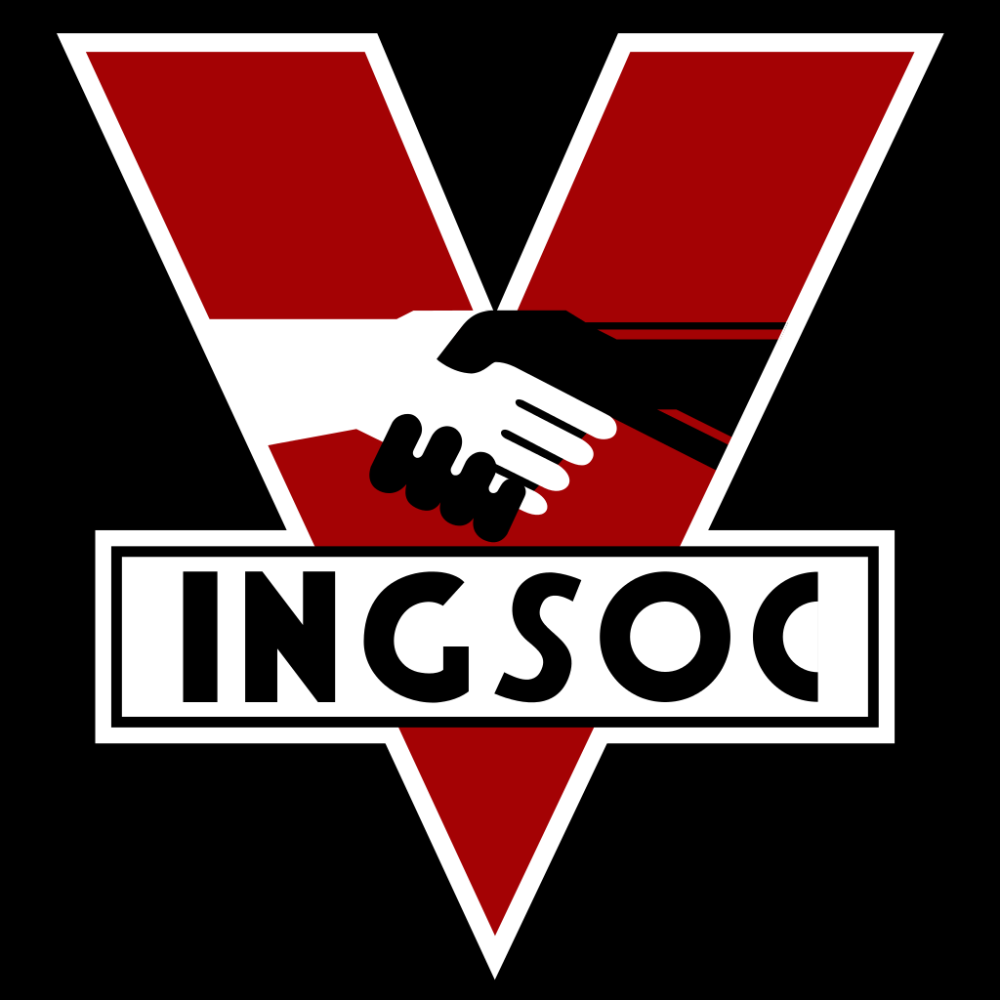

This digital Newspeak Dictionary is inspired by Syme's work in 1984. Newspeak is the Party's way of controlling people by taking away words about freedom, rebellion, and truth. Each word I created shows how language can be changed or simplified to limit what people are able to think and say.

Definition: Any thought that questions the Party.
How it controls thought: It makes freedom sound wrong or dangerous.
Definition: Changing facts so they match what the Party says.
How it controls thought: It teaches people that truth can be changed.
Definition: Erasing old events from memory or records.
How it controls thought: It makes people unable to prove the Party lied.
Definition: Happiness that comes from obeying the Party.
How it controls thought: It makes obedience seem like the only way to be happy.
Definition: Stopping yourself before questioning the Party.
How it controls thought: It trains people to fear their own thoughts.
Definition: Loving one person more than Big Brother.
How it controls thought: It makes personal love seem selfish or wrong.
Definition: Hatred that supports the Party.
How it controls thought: It makes anger seem patriotic.
Definition: Using only approved Party words.
How it controls thought: It removes complicated ideas from conversation.
Definition: A memory that disagrees with Party history.
How it controls thought: It makes people stop trusting their own memories.
Definition: Being smart only when agreeing with the Party.
How it controls thought: It makes independent thinking seem stupid.
Definition: War that is described as peace.
How it controls thought: It makes people accept violence as normal.
Definition: Looking like you disagree with the Party.
How it controls thought: It makes even facial expressions dangerous.
Definition: A person erased by the Party like they never existed.
How it controls thought: It makes people afraid to remember others.
Definition: The habit of avoiding dangerous thoughts.
How it controls thought: It makes people censor themselves.
Definition: Whatever Big Brother says is true.
How it controls thought: It replaces real evidence with loyalty.